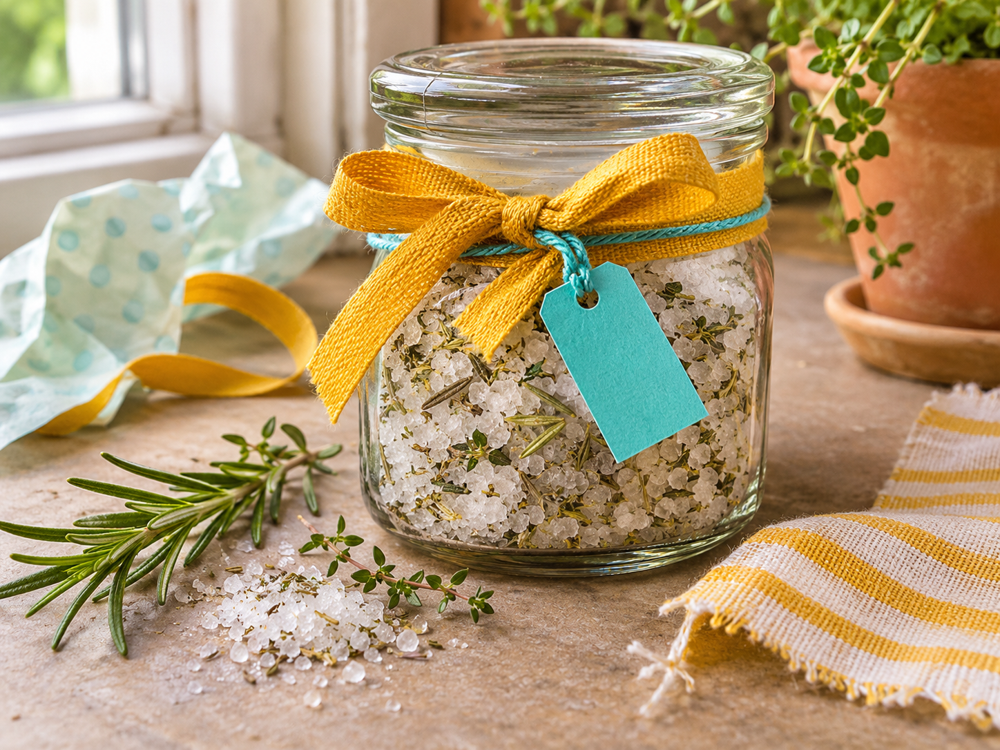
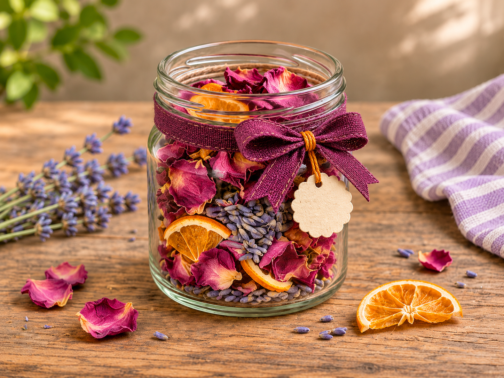
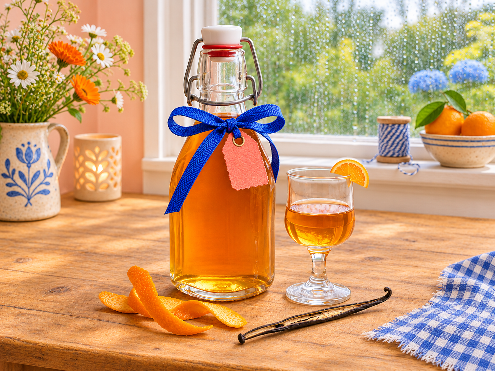
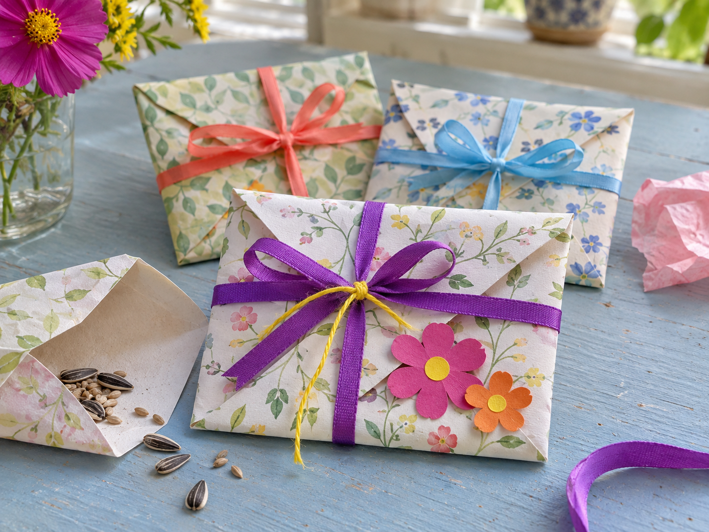

Krydderurtesalt
Lav krydderurtesalt med urter fra haven eller altanen. Fyld det på et lille genbrugsglas, og sæt et kort på med forslag til, hvad saltet passer til.
Læs guidenEn duftende gave af blomster og citrusskaller. Giv tørrede blomster og citrusskaller nyt liv i et genbrugsglas. Pynt med snor eller bånd, og tilføj en personlig hilsen.
Gå til guiden ↓
Arbejdstid: ca. 10 min. · Brug helt tørre materialer
Pynt glasset med en stofrest eller et bånd, og skriv en lille hilsen på et kort af brugt papir.

Lav krydderurtesalt med urter fra haven eller altanen. Fyld det på et lille genbrugsglas, og sæt et kort på med forslag til, hvad saltet passer til.
Læs guiden
Lav en appelsinlikør med appelsinskal, vanilje og vodka fra barskabet. Hæld den på en genbrugsflaske, og bind et bånd om halsen.
Læs guiden
Fold små frøkuverter af brugt papir, og fyld dem med frø fra dine yndlingsblomster. Skriv blomstens navn og et lille såtip på hver kuvert.
Læs guiden